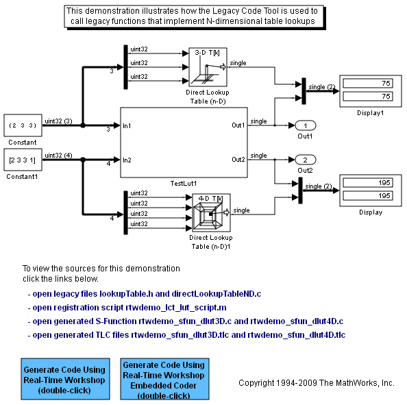
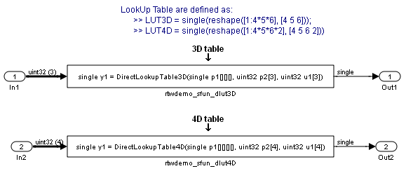

Lookup Tables
This demo shows you how to use the Legacy Code Tool to integrate legacy C functions that implement N-dimensional table lookups.
The Legacy Code Tool allows you to:
- Provide the legacy function specification,
- Generate a C-MEX S-function that is used during simulation to call the legacy code,
- Compile and build the generated S-function for simulation, and
- Generate a block TLC file and optional rtwmakecfg.m file that is used during code generation to call the legacy code.
Contents
- Providing the Legacy Function Specification
- Generating S-Functions for Use During Simulation
- Compiling the Generated S-Functions for Simulation
- Generating TLC Block Files for Code Generation
- Generating an rtwmakecfg.m File for Code Generation
- Generating a masked S-Function block for calling the generated S-Function
- Demoing the Generated Integration with Legacy Code
Providing the Legacy Function Specification
All functions provided with the Legacy Code Tool take a specific data structure or array of structures as the argument. The data structure is initialized by calling the function legacy_code() using 'initialize' as the first input. After initializing the structure, you have to assign its properties to values corresponding to the legacy code being integrated. For detailed help on the properties, call legacy_code('help'). The prototype of the legacy function being called in this demo is:
FLT directLookupTableND(const FLT *tableND, const UINT32 nbDims, const UINT32 *tableDims, const UINT32 *tableIdx)
where FLT is a typedef to float, and UINT32 is a typedef to unsigned int32. The legacy source code is found in the files your_types.h, lookupTable.h, and directLookupTableND.c.
defs = []; evalin('base','load sldemo_lct_data.mat') % rtwdemo_sfun_dlut3D def = legacy_code('initialize'); def.SFunctionName = 'rtwdemo_sfun_dlut3D'; def.OutputFcnSpec = 'single y1 = DirectLookupTable3D(single p1[][][], uint32 p2[3], uint32 u1[3])'; def.HeaderFiles = {'lookupTable.h'}; def.SourceFiles = {'directLookupTableND.c'}; def.IncPaths = {'sldemo_lct_src'}; def.SrcPaths = {'sldemo_lct_src'}; defs = [defs; def]; % rtwdemo_sfun_dlut4D def = legacy_code('initialize'); def.SFunctionName = 'rtwdemo_sfun_dlut4D'; def.OutputFcnSpec = 'single y1 = DirectLookupTable4D(single p1[][][][], uint32 p2[4], uint32 u1[4])'; def.HeaderFiles = {'lookupTable.h'}; def.SourceFiles = {'directLookupTableND.c'}; def.IncPaths = {'sldemo_lct_src'}; def.SrcPaths = {'sldemo_lct_src'}; defs = [defs; def];
Generating S-Functions for Use During Simulation
The function legacy_code() is called again with the first input set to 'sfcn_cmex_generate' in order to automatically generate C-MEX S-functions according to the description provided by the input argument 'defs'. The S-functions are used to call the legacy functions in simulation. The source code for the S-functions is found in the files rtwdemo_sfun_dlut3D.c and rtwdemo_sfun_dlut4D.c.
legacy_code('sfcn_cmex_generate', defs);
Compiling the Generated S-Functions for Simulation
After the C-MEX S-function source files are generated, the function legacy_code() is called again with the first input set to 'compile' in order to compile the S-functions for simulation with Simulink®.
legacy_code('compile', defs);
### Start Compiling rtwdemo_sfun_dlut3D
mex('rtwdemo_sfun_dlut3D.c', 'B:\matlab\toolbox\simulink\simdemos\simfeatures\sldemo_lct_src\directLookupTableND.c', '-IB:\matlab\toolbox\simulink\simdemos\simfeatures\sldemo_lct_src', '-IC:\Temp\R2010bd_251_3840\tp0131b8c4_8885_42d9_84ce_432a16cc3511')
### Finish Compiling rtwdemo_sfun_dlut3D
### Exit
### Start Compiling rtwdemo_sfun_dlut4D
mex('rtwdemo_sfun_dlut4D.c', 'B:\matlab\toolbox\simulink\simdemos\simfeatures\sldemo_lct_src\directLookupTableND.c', '-IB:\matlab\toolbox\simulink\simdemos\simfeatures\sldemo_lct_src', '-IC:\Temp\R2010bd_251_3840\tp0131b8c4_8885_42d9_84ce_432a16cc3511')
### Finish Compiling rtwdemo_sfun_dlut4D
### Exit
Generating TLC Block Files for Code Generation
After the S-function is compiled and used in simulation, the function legacy_code() can be called again with the first input set to 'sfcn_tlc_generate' in order to generate a TLC block file to support code generation through Real Time Workshop. Code generation will fail if the TLC block file is not created and you try to generate code for a model that includes the S-function. The TLC block files for the S-functions are rtwdemo_sfun_dlut3D.tlc and rtwdemo_sfun_dlut4D.tlc.
legacy_code('sfcn_tlc_generate', defs);
Generating an rtwmakecfg.m File for Code Generation
After the TLC block file is created, the function legacy_code() can be called again with the first input set to 'rtwmakecfg_generate' in order to generate an rtwmakecfg.m file to support code generation through Real Time Workshop. The file is needed only if the required source and header files for the S-functions are not in the same directory as the S-functions, and you want to add these dependencies in the makefile produced during code generation.
legacy_code('rtwmakecfg_generate', defs);
Generating a masked S-Function block for calling the generated S-Function
After the C-MEX S-function source is compiled, the function legacy_code() can be called again with the first input set to 'slblock_generate' in order to generate a masked S-function block that is configured to call that S-function. The block is placed in a new model and can be copied to an existing model.
% legacy_code('slblock_generate', defs);
Demoing the Generated Integration with Legacy Code
The model rtwdemo_lct_lut shows integration with the legacy code. The subsystem TestFixpt serves as a harness for the call to the legacy C function, and the Display blocks compare the output of the function with the output of the built-in Simulink lookup blocks; the results are identical.
open_system('rtwdemo_lct_lut') open_system('rtwdemo_lct_lut/TestLut1') sim('rtwdemo_lct_lut') 